by Abraham Kandel
CRC Press, CRC Press LLC
ISBN: 084934297x Pub Date: 11/01/91
|
|
Fuzzy Expert Systems
by Abraham Kandel CRC Press, CRC Press LLC ISBN: 084934297x Pub Date: 11/01/91 |
| Previous | Table of Contents | Next |
Linguistic quantifiers are necessary to accommodate the COUNT form of the original SC. Two kinds of quantifiers are of interest here. A kind 1, or absolute quantifier, represents a specified amount, such as about three, at least four, or all. A kind 2, or relative quantifier, represents an approximate amount, such as most or some.45 The COUNT can be represented through the use of a kind 1 or absolute quantifier of the form “at least n,” as suggested by Zadeh,45 where n is the number required by the COUNT. In order to accommodate quantifiers, H(x1, . . . ,xn) must be redefined:40
Let D(x1, . . . ,xn) = A1(x1), . . . ,An(xn)
and let Di(x1, . . . ,xn) be the ith largest element in the set D(x1, . . . ,xn); that is
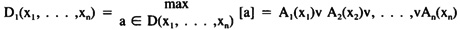and
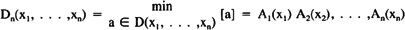the second largest element in D(x1, . . . ,xn),
.
.
.
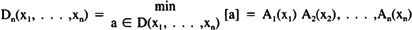Then for any quantifier Q
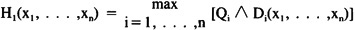Consider the following case, which combines the above two instances:
IF (V1 is R1 AND V2 is R2) THEN L is C
where
V1 is R1 ≡ (U1 is S1 OR U2 is S2 OR U3 is S3)
with the following conditions attached to each symbol:
| U1 | S1 | |
| 1 | Sweating | Present |
| 2 | Nausea | Present |
| 3 | Dizziness | Present |
| V2 | R2 | |
| Symptom | Associated with onset | |
| L | C | |
| Patient | Admissible |
In the original EMERGE formulation, this took the form of a rule containing an SC in the COUNT format:
where SC15 is shown in Figure 8.
In order to apply degrees of membership to this example, first we have:
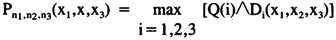
where Si is the membership function for the antecedent of the ith component of SC1, and
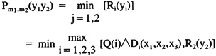
where Ri is the membership function for the ith component of the rule. In order to accomplish the inference we use the form from Yager:32
V1 is A1 AND V2 is A2 AND Vn is An THEN U is B
then
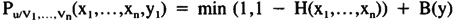
where
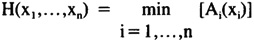
Thus, for this example:
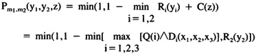
where C is the membership function for “patient is admissible”.
The preceding procedure is sufficient to handle inferences when degree of presence of symptoms is considered. It remains to consider handling of the generalized SC with unequal contribution of antecedents.
In order to incorporate weighting of antecedents, we proceed from the statement:
QV’s are A
where Q is a kind 1 quantifier to:
Q1 (Q2V’s) are A
following the work of Yager.22 This second type of statement can be interpreted as, for example:
(At least n) (important) objectives are satisfied by x
where Q1 is “at least n” and Q2 is “important.” It is then necessary to determine the truth value of the proposition P. This can be done by considering P to be true if there exists some subset C of V so that:42
We then want to find the degree to which P is satisfied by C, which will be denoted Vp(C). The overall validity is then:
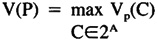
For our application, there are two cases to consider, depending on whether Q1 is a kind 1 quantifier or a kind 2 quantifier. First, consider Q1 is kind 1, as before. The required result is then:42
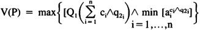
where Q1 is a kind 1 quantifier, ci ∈ {0,1} indicates membership status, q2i is the weighting factor for the ith antecedent, and ai is the degree of presence of the ith finding. Using an example from the EMERGE system for these values, we have:
| 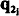 (wieghting factor) | ai (degree of presence) | |
|---|---|---|
| Sweating | .4 | .9 |
| Dizziness | .3 | .7 |
| Nausea | .3 | .5 |
The weighting factor is part of the rule and is determined through expert consultation. The degree of presence is determined for all consultations and is entered by the user. The substantiation value must then be determined by generating all subsets for C ∈ 2A to get the overall validity factor.
| Previous | Table of Contents | Next |